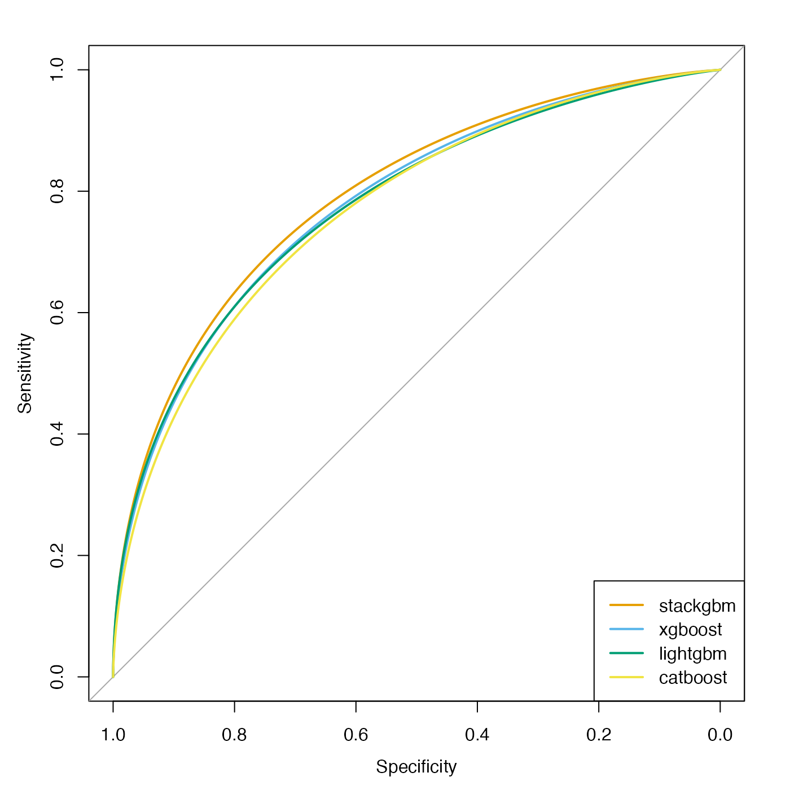

Introduction
Model stacking (Wolpert 1992) is a method for ensemble learning that combines the strength of multiple base learners to drive up predictive performance. It is a particularly popular and effective strategy used in machine learning competitions.
stackgbm implements a two-layer stacking model: the first layer generates “features” produced by gradient boosting trees. The boosted tree models are built by xgboost (Chen and Guestrin 2016), lightgbm (Ke et al. 2017), and catboost (Prokhorenkova et al. 2018). The second layer is a logistic regression that uses these features as inputs.
Generate data
Let’s generate some data for the demo. The simulated data has a \(1000 \times 50\) predictor matrix with a binary outcome vector. 800 samples will be in the training set and the rest 200 will be in the (independent) test set. 25 out of the 50 features will be informative and follows \(N(0, 10)\).
dat <- msaenet.sim.binomial(
n = 1000, p = 50, rho = 0.6,
coef = rnorm(25, 0, 10), snr = 1, p.train = 0.8,
seed = 42
)
x_train <- dat$x.tr
x_test <- dat$x.te
y_train <- as.vector(dat$y.tr)
y_test <- as.vector(dat$y.te)Parameter tuning
cv_xgboost(), cv_lightgbm() and
cv_catboost() provide wrappers for tuning the most
essential hyperparameters for each type of boosted tree models with
k-fold cross-validation. The “optimal” parameters will be used to fit
the stacking model later.
params_xgb <- cv_xgboost(x_train, y_train)
params_lgb <- cv_lightgbm(x_train, y_train)
params_cat <- cv_catboost(x_train, y_train)Training
model_stack <- stackgbm(
dat$x.tr, dat$y.tr,
params = list(
xgb.nrounds = params_xgb$nrounds,
xgb.learning_rate = params_xgb$learning_rate,
xgb.max_depth = params_xgb$max_depth,
lgb.num_iterations = params_lgb$num_iterations,
lgb.max_depth = params_lgb$max_depth,
lgb.learning_rate = params_lgb$learning_rate,
cat.iterations = params_cat$iterations,
cat.depth = params_cat$depth
)
)Performance benchmarking
Let’s compare the predictive performance between the stacking model and the three types of tree boosting models (base learners) fitted individually:
model_xgb <- xgboost_train(
params = list(
objective = "binary:logistic",
eval_metric = "auc",
max_depth = params_xgb$max_depth,
eta = params_xgb$learning_rate
),
data = xgboost_dmatrix(x_train, label = y_train),
nrounds = params_xgb$nrounds
)
model_lgb <- lightgbm_train(
data = x_train,
label = y_train,
params = list(
objective = "binary",
learning_rate = params_lgb$learning_rate,
num_iterations = params_lgb$num_iterations,
max_depth = params_lgb$max_depth,
num_leaves = 2^params_lgb$max_depth - 1
),
verbose = -1
)
model_cat <- catboost_train(
catboost_load_pool(data = x_train, label = y_train), NULL,
params = list(
loss_function = "Logloss",
iterations = params_cat$iterations,
depth = params_cat$depth,
logging_level = "Silent"
)
)xgboost:
roc_xgb_tr <- roc(y_train, predict(model_xgb, x_train), quiet = TRUE)
roc_xgb_te <- roc(y_test, predict(model_xgb, x_test), quiet = TRUE)
roc_xgb_tr$auc
#> Area under the curve: 0.9949
roc_xgb_te$auc
#> Area under the curve: 0.7819lightgbm:
roc_lgb_tr <- roc(y_train, predict(model_lgb, x_train), quiet = TRUE)
roc_lgb_te <- roc(y_test, predict(model_lgb, x_test), quiet = TRUE)
roc_lgb_tr$auc
#> Area under the curve: 0.9956
roc_lgb_te$auc
#> Area under the curve: 0.7801catboost:
roc_cat_tr <- roc(
y_train,
catboost_predict(
model_cat,
catboost_load_pool(data = x_train, label = NULL)
),
quiet = TRUE
)
roc_cat_te <- roc(
y_test,
catboost_predict(
model_cat,
catboost_load_pool(data = x_test, label = NULL)
),
quiet = TRUE
)
roc_cat_tr$auc
#> Area under the curve: 0.9366
roc_cat_te$auc
#> Area under the curve: 0.7739Summarize the AUC values in a table:
| stackgbm | xgboost | lightgbm | catboost | |
|---|---|---|---|---|
| Training | 0.9709 | 0.9949 | 0.9956 | 0.9366 |
| Testing | 0.7965 | 0.7819 | 0.7801 | 0.7739 |
Plot the ROC curves on the independent test set:
pal <- c("#e69f00", "#56b4e9", "#009e73", "#f0e442")
plot(smooth(roc_stack_te), col = pal[1])
plot(smooth(roc_xgb_te), col = pal[2], add = TRUE)
plot(smooth(roc_lgb_te), col = pal[3], add = TRUE)
plot(smooth(roc_cat_te), col = pal[4], add = TRUE)
legend(
"bottomright",
col = pal, lwd = 2,
legend = c("stackgbm", "xgboost", "lightgbm", "catboost")
)
Notes on categorical features
xgboost and lightgbm both prefer the categorical features to be encoded as integers. For catboost, the categorical features can be encoded as character factors.
To avoid possible confusions, if your data has any categorical features, we recommend converting them to integers or use one-hot encoding, and use a numerical matrix as the input.